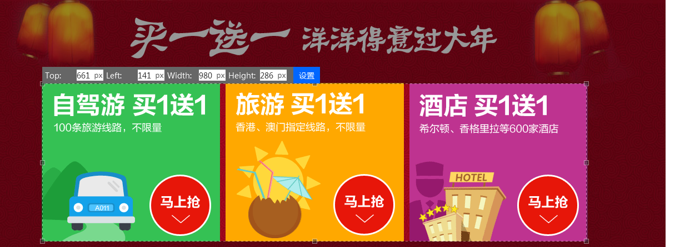
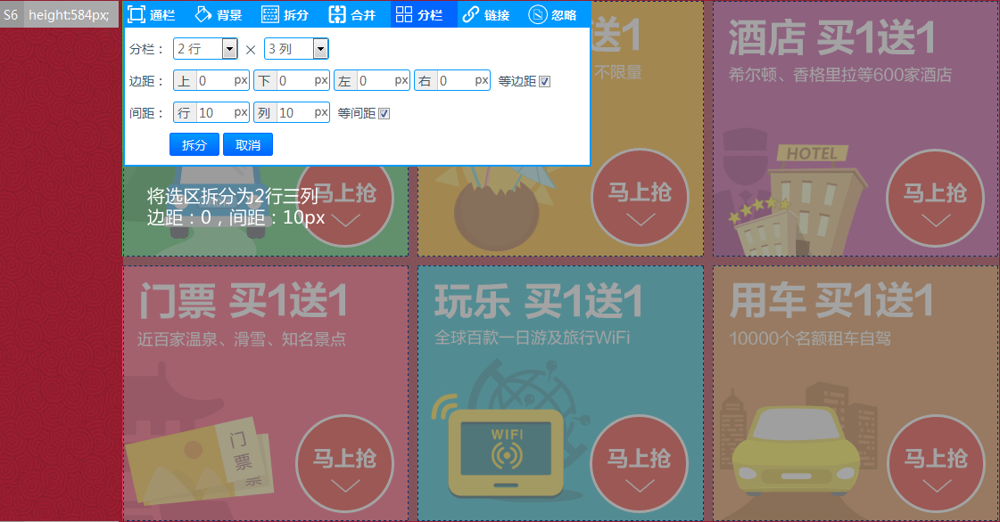

视频教程
软媒魔方首页切图高清视频演示：http://pan.baidu.com/s/1jGvjzQe （0间距色差识别、自动切图）
小米商城首页切图高清视频演示：http://pan.baidu.com/s/1dDCU9jF （间距识别、自动切图）
软媒魔方首页切图高清视频演示：http://pan.baidu.com/s/1jGvjzQe （0间距色差识别、自动切图）
小米商城首页切图高清视频演示：http://pan.baidu.com/s/1dDCU9jF （间距识别、自动切图）
首先，我们为你准备了一张用例图片，【点此下载】，下载后导入到页面中，页面会自动弹出设置对话框，设置对话中提供了一些默认的参数，请根据页面规格尺寸修改配置，如下图所示：。
在这里我们设置页宽：982px，间距：0，背景色默认：#FFFFFF，如下图所示

参数说明：
页宽：这里需要注意，页宽并非是网页设计效果图的宽度，而是指我们要将内容限定的区域，即：页面主体的宽度，请保持页面主体在网页设计效果图的中间位置。
间距：这里指的是选区之间的距离，快切助手根据选区的位置和大小裁剪图片。
背景色：如果网页由多屏颜色构成，也可不用设置，但在间距大于0时使用自动切图功能必须指定背景色，这是一种精确的切图方式，切图程序根据间距和背景色切分图像。
自动切图功能能够自动创建选区，这里需要注意，并不是所有页面都可以使用自动切图。因为图像识别是基于图像特征的识别，所以在使用自动切图功能时，需要满足两个限定条件：
一、精确识别：根据页宽和背景色进行识别，各选区需要有一致的背景色和间距，请设置“间距”，和“背景”。

二、模糊识别：根据选区之间的色差进行识别。
因为要区分渐变色和杂色，所以模糊识别会有一定误差，勤道团队还在不断优化图形识别算法。
自上线以来，用户量增长迅速，用户量日渐庞大，节约您每一秒钟都将是勤道团队的毕生的奋斗目标。
对于不满足自动切图限定条件的，我们需要使用【追加】功能手动创建选区，【追加】功能会在当前选区下方创建一个选区，手动创建选区也同样快速，高效。
选区创建后，单击选区选中，显示附件工具栏，选区进入可编辑状态，我们可对选区进行拆分、向下合并、设置通栏，设置选区背景色、对选区进行分栏等。当鼠标移到选区下边框的位置，鼠标变为双箭头，此时选区可向上或向下调整。注意：为避免影响已创建的选区，只能在相邻的两个选区之间进行高度调节。
使用自动切图功能有时拆分出来是这个酱紫，我们需要使用【合并】功能依次合并选区，然后使用分栏功能将选区分为5行3列。
附加工具栏使用都很简单，请参看【帮助文档】，或在使用中体验。我们在这里仅演示对分栏功能。
我们在这里仅演示分栏功能，如上图所示：我们设置拆分2行，3列，边距：0，间距10px，拆分效果如下：

{kind=link}